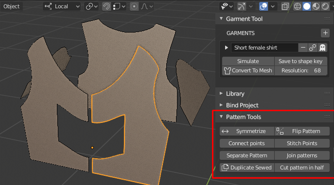

Pattern Tools#
They help with modeling sewing patterns curves, while preserving sewings data. You have option to split, mirror, weld points etc.

Symmetrize#
Symmetrize behaves like mirror modifier on meshes. There are two algorithms for symmetrize:
- default will preserve sewings better, but may fail to symmetrize more complicated patterns
- second one (accessed by Shift+Click on 'Symmetrize' button) - works better on more complicated patterns, but won't preserve sewings as well.
Flip patterns#
Flip operator will create linked instance of selected 2d curve, on opposite side of character. If you flip curve that was already linked, it will update the position of previous pattern duplicate, instead of creating new instance. Patterns are linked if theirs names ends with:
- (.r, .l) or (.R and .L)
- (.right, .left) or (.RIGHT, .LEFT)
- or the same but with dot replaced with '_'
For example: arm_l, arm_r is valid suffix for linked mirrored sewing patterns.
Stitch Points#
Moves two points together, and merges them.
Connect Points#
Connect two selected points with line.
Cut pattern in half#
Split 2D curve into two parts. Splitting is performed along the center X-axis line. There is option (F9) to instance the mirrored part. * Instance option wont preserve the sewings data!
Separate / Join patterns#
Split 2D curve into two separate object. Or join 2D curve into one sewing pattern object.
Duplicate sewed pattern#
This option will duplicate selected 2d curve, and it will connect all edges of duplicate and source curve with sewings. Sewings will be generated only if duplicated patter is used in Garment. There if option 'sewing source' (under F9):
- SEWINGS - clone will duplicate existing source object sewings
- OBJECT - clone will be stitched to source object